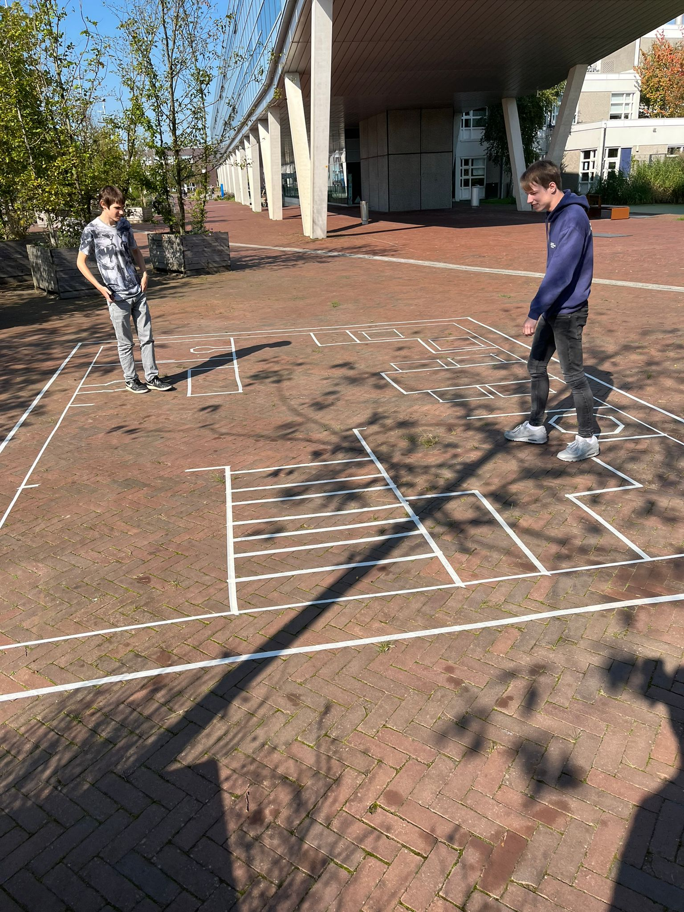
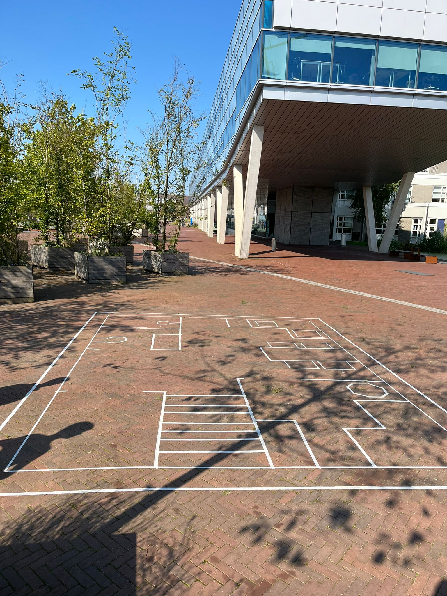
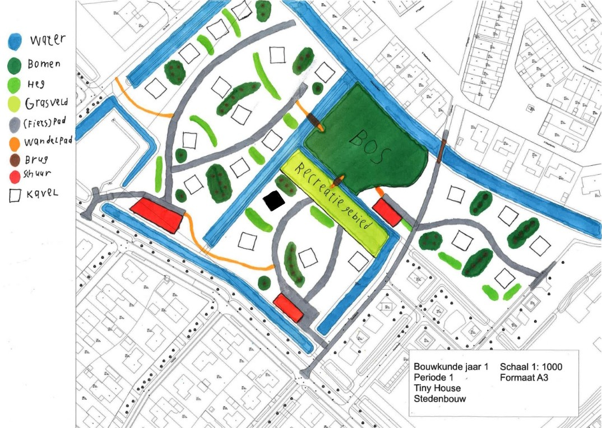
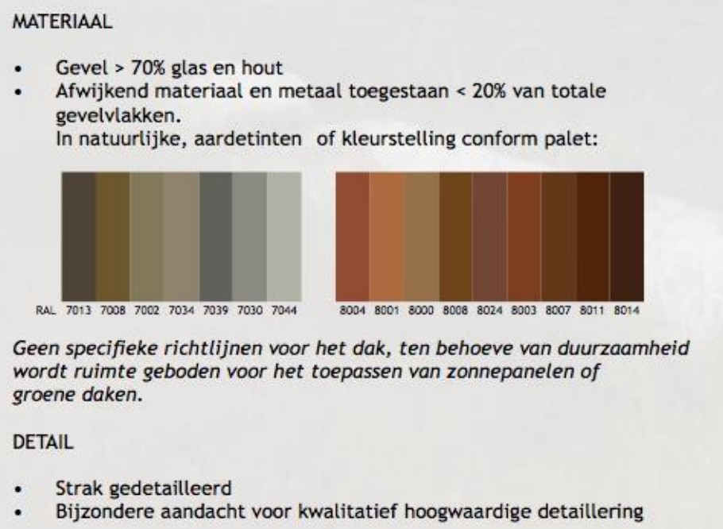
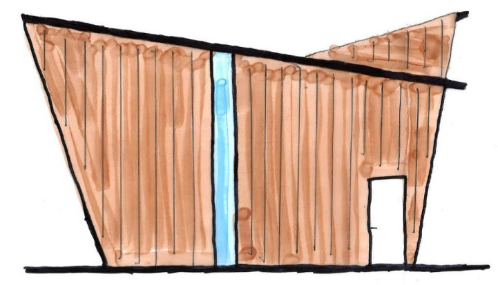
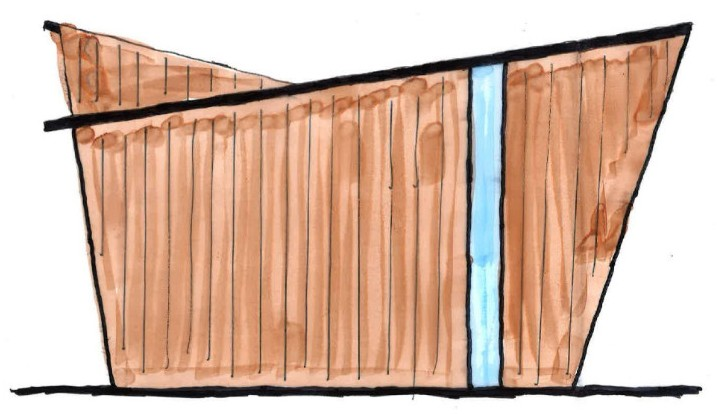
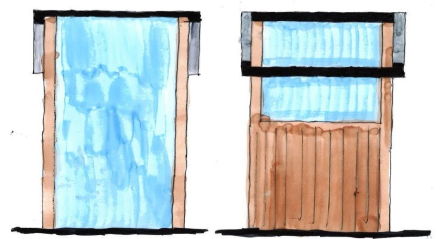
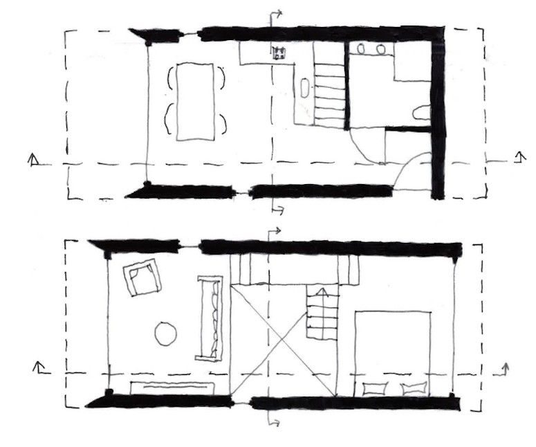
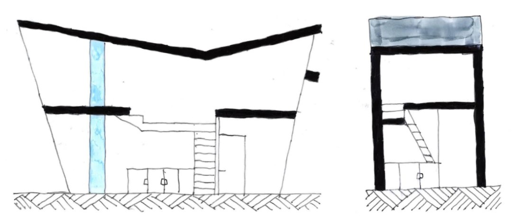

Jaar 1▾
Het eerste project dat we gingen doen was het Tiny House project.
Voor dit project moesten we een Tiny House ontwerpen en uitwerken.
We waren zelf de opdrachtgever van het project en dus konden we enigzins doen wat we wouden.
De eerste schouw van het Tiny House project was voor de LUKs initiëren en sturen,
hiervoor kregen we 5 werkbladen om uit te werken: projectdefinitie, maatstudies, stedenbouw, ontwerpconcept en schetsontwerp.
Met deze werkbladen kregen we een goed beeld van wat er moest gebeuren en hoe dat over het algemeen gebeurd.
Uiteindelijk hadden we een schetsontwerp die we in de tweede schouw verder gingen uitwerken.


Voor maarstudies moesten we een plattegrond van een tiny house op ware grote uittapen, hierdoor kom je erachter hoe groot dingen eigenlijk zijn en hoeveel ruimte je ervoor nodig hebt om het comfortabel te kunne gebruiken. Ik heb met mijn groepje niet mijn plattegrond gedaan maar die van een groepsgenoot.

In techum is een straat waar een stuk of 10 tiny houses staan, omdat ons project dit als plangebied speelt, moesten we de weilanden ernaast indelen voor nog meer tiny houses. Hiervoor moesten we rekening houden met dingen zoals bereikbaarheid, privacy en riolering. Wij hebben 21 kavels toegevoegd op de weilanden die verdeeld zijn in 3 zones.






De Projectdefinitie is er om t zorgen dat alle feiten van het project op 1 plek te vinden zijn, deze feiten zijn onder andere: de wensen en eisen van de opdrchtgever (voor dit project was ik dat zelf), de eisen van het BBL en de eisen van het beeldkwaliteitsplan. Deze dingen heb ik dus voor de schouw opgezocht en op een rijtje gezet.
Om een goed ontwerop te krijgen moet er eest een ontwerpconcept gemaakt worden, hier staan de eerste ideeën over het huis in en bestaat uit de algemene uitstraling en de vorm. Uiteindelijk moesten we aan de hand van een referentieproject een schetsontwerp maken, daar is dit uitgekomen.